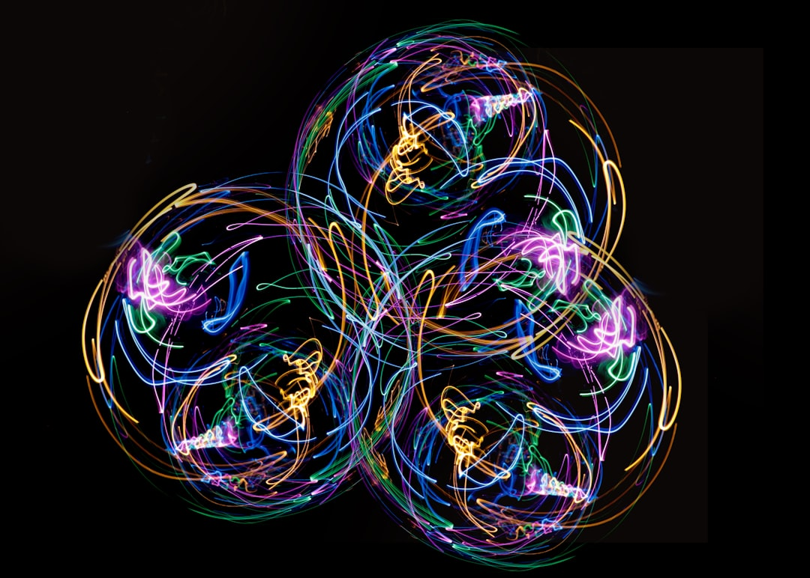

一、1987年的预言
1987年4月，IBM和微软联合发布了OS/2操作系统。
从任何技术指标看，OS/2都碾压同期的Windows：真正的多任务处理、保护模式内存管理、更稳定的系统架构。IBM投入了超过10亿美元的研发预算，集结了公司最顶尖的工程师。《纽约时报》评价它"代表了个人电脑操作系统的未来"。
三年后，OS/2死了。
杀死它的不是更好的技术。Windows 3.0在发布时，几乎每一项核心指标都不如OS/2。但Windows做了一件OS/2没做的事：它让上万个第三方开发者可以轻松地为它写软件。到1990年底，Windows上运行着数千个应用程序，OS/2上只有几十个。
用户的选择逻辑很简单：我不需要"最好的操作系统"，我需要"能跑最多软件的操作系统"。
2026年5月的AI行业，正在上演完全相同的剧情。
Chatbot Arena的排行榜上，排名前五的大模型Elo评分差距只剩20分——从1484到1504。20分是什么概念？大约等于你在问"帮我写封邮件"时完全感受不到的差别。MMLU等曾经的黄金基准测试上，前沿模型全部突破90%，已经失去区分能力。
而在这张排行榜之外，另一场战争已经分出了阶段性胜负。
二、20分的距离
2024年初，GPT-4和排名第二的模型之间的Elo差距超过100分。到2025年底，前五名的差距压缩到了40分。2026年5月，这个数字是20分。这不是线性下降，是坍缩。
基准测试的区分能力也在坍塌。MMLU——相当于给AI出的综合高考题——在2023年还能把模型分出三六九等，GPT-4拿了86.4%，第二梯队在70%出头。到2026年，前沿模型全部突破90%，这张考卷事实上"考满了"。SWE-bench——让AI去修真实软件里的bug——上，开源模型MiniMax M2.5拿到了80.2%，Anthropic的旗舰Claude Opus 4.6是80.8%。差了0.6个百分点。
定价的坍缩更加剧烈。Claude Opus的API价格从每百万token 15美元降到了5美元，降幅67%。GPT-4o比一年前的GPT-4便宜了超过80%。而DeepSeek——一家成立不到两年的中国公司——用不到600万美元的训练成本，做出了接近GPT-4水平的模型，API定价是OpenAI和Anthropic的1/10到1/20。
一组来自MIT的数据把这个趋势推向了逻辑终点：研究人员追踪了数百个企业级GenAI试点项目，发现95%未产生可衡量的财务影响。瓶颈不是模型不够聪明——是模型的"聪明"无法转化为业务价值。
问题出在哪里？
不在模型的脑子里。在模型和真实世界之间，那根断裂的管道上。
三、一个协议的逆袭
2024年11月，Anthropic做了一件在当时看起来很奇怪的事：发布了一个开源协议。
这个协议叫MCP——Model Context Protocol，模型上下文协议。它定义了一套标准接口，让AI模型可以连接外部工具、数据库、API和文件系统——用同一种方式，不管底层是哪家的模型。
在此之前，每家AI公司都在各搞一套。OpenAI有自己的Function Calling和Plugins体系，Google有自己的工具调用规范。开发者如果想让自己的工具同时兼容Claude和GPT，得写两套完全不同的代码。
MCP的野心是终结这种碎片化。
结果超出了所有人的预期。发布18个月后，MCP的SDK月下载量达到9700万次，社区贡献了超过17000个公开服务器——意味着AI模型可以直接连接17000多种工具和数据源。78%的企业技术团队已经在某种程度上采用了MCP。
2025年12月，Anthropic把MCP捐赠给了Linux基金会。OpenAI、Google和Microsoft都加入成为创始成员。这一幕耐人寻味：三家在模型层厮杀了三年的竞争对手，在生态层选择了接受同一家定义的标准。
OpenAI的路线变化尤其值得玩味。从2023年的ChatGPT Plugins，到2024年的GPT Store，再到Assistants API，最后到2026年的Responses API并宣布支持MCP——两年四次战略转向。Assistants API将在2026年8月正式关闭。每一次转向都意味着之前押注该方案的开发者白干了。
Google选择了另一条路。它没有直接和MCP竞争，而是推出了A2A（Agent-to-Agent）协议——定义的不是"AI如何调用工具"，而是"AI Agent之间如何协作"。A2A已获得超过150个组织的支持。Google Cloud的Thomas Kurian公开说，Google的优势在于"从芯片到收件箱，拥有全栈"。
三家的策略不同，但释放了同一个信号：模型本身不再是终点，模型与世界的连接方式才是。

四、三代人的相同剧本
把时间线拉长，MCP的故事就不再是个案，而是一个反复上演的模式。
过去40年的科技史中，每一次平台级变革都经历了相同的三幕剧：第一幕，技术突破，所有人比拼核心能力；第二幕，核心能力趋同，竞争转向生态系统；第三幕，生态赢家通吃，技术最优者退场或被收编。
PC时代就是第一个版本。IBM在硬件上遥遥领先，OS/2在技术上碾压Windows。但微软通过开放API、拉拢第三方开发者、让Windows可以跑DOS程序来构建兼容性，建起了一个比IBM大十倍的软件生态。IBM最终卖掉了PC业务。技术上更优秀的OS/2成了教科书上的反面案例。
智能手机时代上演了第二个版本。2007年iPhone发布时，诺基亚的Symbian系统市场份额超过60%。诺基亚的手机在信号强度、电池续航、摔落测试等硬件指标上全面领先。但苹果做了App Store。到2010年，App Store里有超过30万个应用，Symbian的应用商店里只有几千个。诺基亚的技术优势在生态劣势面前一文不值。
云计算时代又来了一遍。AWS的底层技术不比Google更先进，但它最早建起了完整的开发者工具链和第三方市场。到2024年，AWS占全球公有云31%的份额，Google Cloud只有12%。
三代人，同一个剧本。核心能力趋同之后，胜负手不再是"谁的技术更好"，而是"谁让更多人在我的平台上建东西"。
2026年的AI行业正走到这个剧本的第二幕。模型的核心能力——语言理解、推理、代码生成——正在快速趋同。而"让更多人在我的平台上建东西"的竞赛，才刚刚开始。
五、谁在犯OS/2的错？
如果历史的剧本成立，那么现在最该问的问题是：三大AI巨头各自站在哪一边？
Anthropic的策略最清晰。它既做模型，也定义协议——然后把协议捐出去，让所有人都用。这很像1990年代微软的路数：Windows是商业产品，但围绕它的开发工具链（Visual Basic、MSDN）几乎免费。目的不是在工具上赚钱，是让更多人在Windows上写程序。Anthropic把MCP捐给Linux基金会的逻辑如出一辙：不在协议上赚钱，在协议之上的模型和服务上赚钱。
Anthropic在2026年初还做了另一件事：与高盛联合成立一家企业AI服务公司，专门帮大型金融机构部署AI。这意味着Anthropic不再满足于卖API——它开始向客户卖"AI在你们公司真正跑起来"的能力。当模型本身不再是差异化因素，"帮客户把模型用起来"就成了最值钱的能力。
OpenAI的处境更复杂。它仍然在模型层投入最多资源，也仍然拥有最大的用户基数（ChatGPT月活超过8亿）。但它在生态层的反复横跳暴露了战略焦虑：Plugins失败了，GPT Store没有爆发，Assistants API要关了。每一次推倒重来，都在消耗开发者的信任。2026年，它选择拥抱MCP，某种程度上承认了在接口标准上输给了Anthropic。
Sam Altman在DeepSeek事件后说了一句耐人寻味的话："我们在开源问题上站在了历史错误的一边。"这句话不只是关于开源模型，也关于开放生态。
Google的优势在于全栈——从TPU芯片、到Gemini模型、到Google Workspace办公套件、到Android生态。它不需要靠一个协议来建生态，因为它自己就是生态。2026年它把Vertex AI改名为Gemini Enterprise Agent Platform，意图明确：不再分开卖模型和工具，而是打包卖"整个AI工作流"。
但Google的隐患也在于全栈。OS/2失败的原因之一，就是IBM试图在硬件、操作系统和应用程序上全部自己做。封闭系统能保证体验一致性，却无法激发第三方生态的爆发。Google的A2A协议虽然拿到了150多个组织的支持，但采用深度还远不如MCP。
2025年全球AI领域的风险投资给了一个侧面印证：全年2587亿美元，其中AI基础设施类（不是模型本身，是围绕模型的工具链、部署平台、集成服务）占了1093亿美元，是所有类别中最大的。2026年第一季度，AI占全球VC投资的比例进一步飙升到80%。
钱在用脚投票。它投的不是更聪明的模型，是让模型变得更有用的基础设施。
六、不服的人说
模型趋同、生态为王、历史重演——这个判断有三个有力的反驳，必须正面回应。
第一个反驳来自技术层面：Scaling Laws并没有失效。
持续增加计算量仍然能产生新的涌现能力。Claude在代码Arena上的Elo达到1561分，是第一个突破1500大关的模型，领先第二名超过60分。Gemini在ARC-AGI-2（一个衡量通用推理能力的测试）上达到77.1%的准确率。在高难度任务上，模型之间的差距不是在缩小——是在拉大。
这个反驳的要害是：如果某家公司在下一代模型上实现代际跳跃（比如在复杂推理上拉开50%以上的差距），那么生态优势可能一夜归零。就像iPhone出现时，诺基亚的Symbian生态再大也没用——技术差距大到了用户不在乎生态的程度。
公平地说：这不是不可能。但当前的数据不支持这个假设。模型之间的差距在大多数维度上仍在缩小，而非扩大。把整个战略押注在"我们可能实现代际突破"上，是一种豪赌。
第二个反驳来自平台理论：开放协议不等于竞争壁垒。
MCP是开源的。如果它真的成为通用标准，那所有模型都能平等地调用工具——Anthropic的先发优势会被抹平。这是Stratechery的Ben Thompson会提出的问题：标准化恰恰会消除接口层的差异化，让竞争重新回到模型质量上。
这个反驳有道理，但忽略了一个关键事实：HTTP也是开放标准，但Google定义了人们如何在HTTP上竞争。协议的定义者拥有的不只是先发优势——还有设计哲学的影响力、社区的领导地位、以及围绕协议构建最佳实践的能力。MCP的规范文档是Anthropic写的，最活跃的MCP服务器是Anthropic生态内的开发者贡献的。开放不等于均等。
第三个反驳来自实践层面：协议碎片化可能导致谁都赢不了。
MCP管"模型调用工具"，A2A管"Agent之间对话"，边界模糊且有重叠。企业在选择时面临新的困惑，可能导致两个标准都无法形成统治性地位，最终回到各搞一套的碎片化状态。
这个风险是真实的。但观察MCP的采纳速度和覆盖面——18个月17000个服务器——它已经接近事实标准的临界点。协议竞争的历史规律是：一旦某个标准越过采纳临界点，后来者几乎不可能翻盘。VHS vs Betamax、USB vs FireWire、HTTP vs Gopher——每一次都是如此。
七、下一个三年
回到1987年。
IBM失去PC市场的那个瞬间，不是某一天突然发生的。它发生在IBM的高管们还在会议室里讨论OS/2下一版的技术路线图的时候。他们讨论的每一个技术决策都是对的——更好的内核、更强的安全性、更快的速度。唯一的问题是，这些讨论已经不重要了。重要的事情正在公司外面发生：成千上万的开发者在为Windows写代码。
2026年的AI行业里，类似的讨论仍在进行。模型还能不能继续scaling？下一代架构是什么？怎么让推理更快、更便宜？这些问题都很重要。但有一个可能更重要的问题正在被忽略：
谁能让AI真正连上这个世界？
当前的答案，是一个叫MCP的协议和围绕它的17000个工具。这个答案可能会变。但竞赛的赛道不太会变——因为40年来，它从没变过。